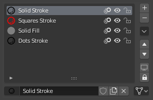
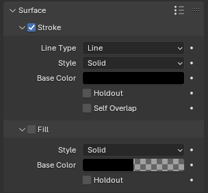
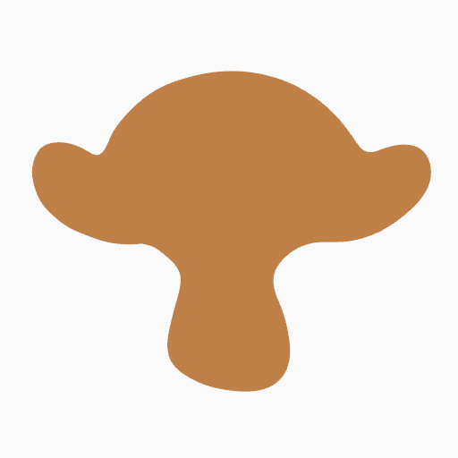
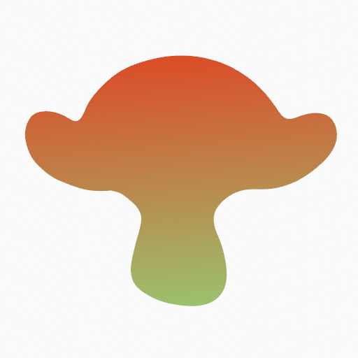
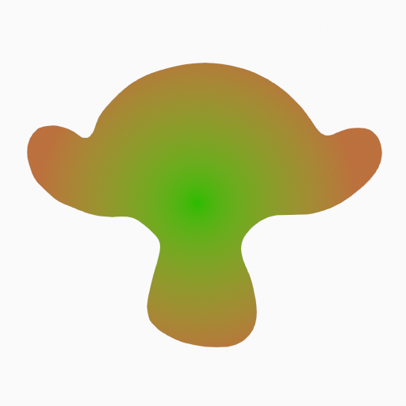
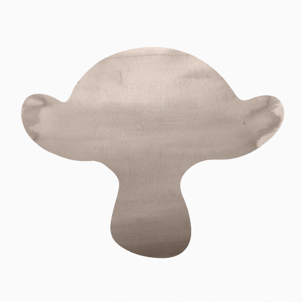

Thuộc tính Material Grease Pencil¶
Material Grease Pencil xác định cách stroke và fill được render. Mỗi stroke tham chiếu đến đúng một material, và material đó chứa các thiết lập riêng cho thành phần Stroke và Fill của nó.
Panel Material Properties cung cấp các công cụ để quản lý material slot, điều khiển khả năng hiển thị và khóa, cũng như cấu hình vẻ ngoài của shading stroke và fill.
Material Slot¶

Panel material slot của Grease Pencil.¶
Material slot gán material vào object Grease Pencil. Mỗi stroke lưu một tham chiếu đến một trong các material slot này.
Material đang hoạt động được dùng cho các stroke mới tạo. Các stroke sẵn có giữ nguyên material được gán, trừ khi được thay đổi thủ công.
Bên cạnh tên mỗi material là các điều khiển cho các tùy chọn hiển thị và chỉnh sửa phổ biến:
- / (Show/Hide in Ghosts)
Điều khiển material có hiển thị trong bản xem trước Onion Skinning hay không.
- / (Hide/Show Material)
Bật/tắt khả năng hiển thị của các stroke dùng material này trong viewport.
- / (Lock/Unlock Material)
Ngăn các stroke dùng material này bị chỉnh sửa trong Edit Mode.
Specials¶
Các operator sau cung cấp điều khiển hàng loạt đối với khả năng hiển thị và khóa material:
- Show All
Bật khả năng hiển thị cho tất cả material.
- Hide Others
Ẩn tất cả material trừ material đang hoạt động.
- Lock All
Khóa tất cả material để ngăn chỉnh sửa.
- Unlock All
Mở khóa tất cả material để chỉnh sửa.
- Lock Unselected
Khóa các material không được dùng bởi các stroke hiện đang được chọn.
- Lock Unused
Khóa và ẩn các material không được gán cho stroke nào.
- Copy Material to Selected
Sao chép material đang hoạt động sang các object Grease Pencil được chọn.
- Copy All Materials to Selected
Sao chép tất cả material slot sang các object Grease Pencil được chọn.
- Remove Unused Slots
Xóa các material slot không được gán cho stroke nào.
Điều khiển Khóa & Hiển thị¶
- (Isolate Material)
Khóa tất cả material khác để chỉ material đang hoạt động mới có thể được chỉnh sửa.
- (Isolate Material)
Ẩn tất cả material khác để chỉ material đang hoạt động hiển thị.
Surface¶

Panel Shader khi chỉ bật thành phần Stroke.¶
Panel Surface xác định vẻ ngoài của stroke và fill. Mỗi material chứa hai thành phần độc lập:
Stroke -- Điều khiển việc render đường viền.
Fill -- Điều khiển việc phần bên trong của các stroke khép kín.
Mỗi thành phần có thể được bật hoặc tắt độc lập.
Stroke¶
Thành phần Stroke xác định cách bản thân đường nét được vẽ.
- Line Type
Xác định cách hình học của stroke được render.
- Line:
Render một đường liền nối các point của stroke.
- Dots:
Vẽ một hình tròn tại mỗi point của stroke. Các point không được nối với nhau.
- Squares:
Vẽ một hình vuông tại mỗi point của stroke. Các point không được nối với nhau.
- Style
Xác định cách stroke được shade.
- Solid:
Dùng một màu nền đồng nhất.
- Texture:
Dùng một image texture ánh xạ dọc theo stroke.
- Image
Data-block ảnh được dùng làm nguồn texture.
- Blend
Hệ số trộn giữa texture và Base Color.
- UV Factor
Điều khiển việc thu phóng texture dọc theo chiều dài stroke.
- Placement Dots Squares
Xác định cách các dấu chấm hoặc hình vuông được phân bố dọc theo stroke.
- Count:
Đặt một số lượng dấu chấm cố định trên mỗi đoạn stroke.
Chế độ này giữ số lượng hình được tạo ra nhất quán, bất kể chiều dài hay độ dày của stroke.
- Count
Số dấu chấm đặt trên mỗi đoạn stroke.
- Radius:
Đặt dấu chấm dựa trên bán kính stroke, điều chỉnh khoảng cách theo độ dày stroke.
Bán kính stroke lớn hơn tạo khoảng cách giữa các dấu chấm rộng hơn, còn bán kính nhỏ hơn đặt chúng gần nhau hơn.
- Spacing
Khoảng cách giữa các dấu chấm tính theo phần trăm đường kính của chúng.
Giá trị thấp hơn tạo các dấu chấm chồng lấn hoặc xếp sát nhau, còn giá trị cao hơn làm tăng khoảng trống giữa từng hình được tạo ra.
- Density:
Đặt dấu chấm dựa trên chiều dài stroke.
Stroke dài hơn tạo nhiều dấu chấm hơn còn stroke ngắn hơn tạo ít hơn, giữ mật độ thị giác đồng đều hơn dọc theo stroke.
- Density
Số dấu chấm được tạo dọc theo chiều dài stroke.
Giá trị cao hơn tạo các dấu chấm dày đặc hơn.
- Base Color
Màu chính của stroke.
- Holdout
Khiến stroke đóng vai trò như một mask, loại bỏ màu khỏi các stroke và fill bên dưới.
- Alignment
Điều khiển hướng của Dots và Squares.
- Path:
Căn theo hướng vẽ và hướng xoay của object.
- Object:
Chỉ căn theo hướng xoay của object.
- Fixed:
Căn theo không gian màn hình.
- Rotation
Xoay các hình Dots hoặc Squares. Giới hạn từ -90° đến 90°.
- Self Overlap
Điều khiển cách các phần chồng lấn của cùng một stroke hòa trộn với nhau, đặc biệt với các material bán trong suốt.
Randomize¶
Thêm biến thiên ngẫu nhiên vào các dấu chấm hoặc hình vuông được tạo, để có vẻ ngoài ít đồng đều hơn.
- Size
Ngẫu nhiên hóa kích thước của các hình được tạo.
Giá trị cao hơn làm tăng sự chênh lệch giữa các dấu chấm to và nhỏ.
- Strength
Ngẫu nhiên hóa độ đục của các hình được tạo.
Điều này có thể tạo vẻ ngoài tự nhiên hơn hoặc có texture hơn.
- Rotation
Ngẫu nhiên xoay các hình được tạo quanh tâm của chúng.
Điều này dễ thấy nhất khi dùng các hình vuông.
- Hue
Ngẫu nhiên hóa hue của các hình được tạo.
- Saturation
Ngẫu nhiên hóa saturation của các hình được tạo.
- Value
Ngẫu nhiên hóa độ sáng của các hình được tạo.
- Noise Scale
Điều khiển tỷ lệ của hoa văn nhiễu ngẫu nhiên.
Giá trị thấp hơn tạo biến thiên mượt hơn dọc theo stroke, còn giá trị cao hơn tạo ngẫu nhiên hóa thay đổi nhanh hơn.
Fill¶
Thành phần Fill điều khiển việc render các vùng stroke khép kín.
- Style
Xác định cách fill được shade.
- Solid:
Dùng một màu nền duy nhất.
- Gradient:
Pha trộn giữa hai màu.
- Gradient Type
- Linear:
Pha trộn dọc theo một trục.
- Radial:
Pha trộn tỏa ra từ một điểm trung tâm.
- Texture:
Dùng một image texture.
- Image
Data-block ảnh được dùng cho texture fill.
 Solid¶ |
 Gradient (Linear)¶ |
 Gradient (Radial)¶ |
 Texture¶ |


- Base Color
Màu fill chính.
- Secondary Color Gradient
Màu phụ được dùng cho gradient.
- Holdout
Khiến fill đóng vai trò như một mask, loại bỏ màu khỏi các stroke bên dưới.
- Blend Gradient / Texture
Điều khiển sự pha trộn giữa Base Color với gradient hoặc texture.
- Flip Colors Gradient
Hoán đổi màu Base và màu Secondary.
- Location X, Y Gradient / Texture
Dịch chuyển tọa độ gradient hoặc texture.
- Rotation Gradient / Texture
Xoay ánh xạ gradient hoặc texture.
- Scale X, Y Gradient / Texture
Thu phóng ánh xạ gradient hoặc texture.
- Clip Image Texture
Ngăn texture lặp (tiling) khi bật.
Settings¶
- Pass Index
Số nhận dạng nguyên tùy chỉnh để dùng trong modifier và compositing. Có thể được dùng để nhắm vào material cụ thể trong Grease Pencil Modifiers.